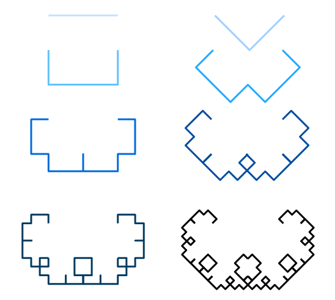

- Fractal
 A complex geometric pattern exhibiting self-similarity in that
small details of its structure viewed at any scale repeat
elements of the overall pattern.
A complex geometric pattern exhibiting self-similarity in that
small details of its structure viewed at any scale repeat
elements of the overall pattern.

Fractal curves are generated from an initial curve
(often a regular polygon) and one or more replacement
curves. Repeatedly, each line is replaced by a properly
scaled copy of one of the replacement curves.
Let's draw a Lévy C curve
Begin with drawing a simple line.

function offsetPoint(start, angle, distance) {
return p5.Vector
.fromAngle(radians(angle), distance)
.add(start);
}
function drawCurve(start, angle, distance) {
var endPt = offsetPoint(start, angle, distance);
line(start.x, start.y, endPt.x, endPt.y);
}
Replace the line with the right angle pattern.


var d2 = d1 * someScale; // <-- what's this number?
var midPt = offsetPoint(start, angle + 45, d2);
var endPt = offsetPoint(midPt, angle - 45, d2);
line(start.x, start.y, midPt.x, midPt.y);
line(midPt.x, midPt.y, endPt.x, endPt.y);
someScale = 0.7071069;
- Recursive
- Relating to or involving the repeated application of a rule, definition, or procedure to successive results.
function someFn(param) {
//...
someFn(newParam);
//...
}
function drawCurve(start, angle, d1, replacements) {
if (replacements == 0) {
// draw the line
} else {
// call draw curve for each line in
// the pattern.
drawCurve(..., replacements - 1);
}
}
Let's look at some other curves.